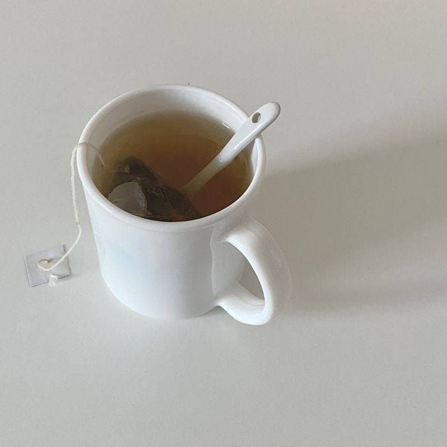

L I F E S T Y L E
1. Morning
My day begins at 6.00 a.m. I will wakes me up with a cup of hot green tea, 0 sugar. I have my breakfast at 8.00 a.m along with the rest of my family. Bread will always be my favourite food to breakfast.
2. After Breakfast
After we finish breakfast, we watch the TV news at the hour and also go through the day with newspaper. I never miss the day's paper and go through the headlines on the front page as well as the sports column. Then, we chat for a while and do our work.
3. Afternoon
After breaksfast, I will fo my job until 1.oo p.m. Then, I will have my lunch at 2.00 p.m.
4. Evening
There is no specific routin on evening. Usually I will just have some 'Me Time' after finish all my work. Sometimes, I went hanging out with my friends. Usually I went to the beach because my love towards the beash are uncountable. Then, I will get home before 7.00 p.m.